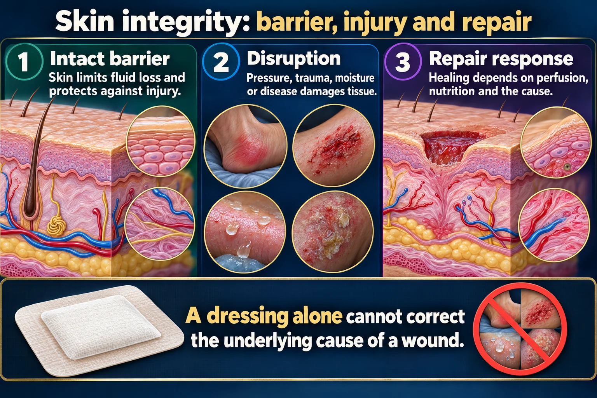

Wound Care 🩹
How wounds close · the healing phases · assessment · dressings · drains · dehiscence & evisceration
Wound care is four questions asked in order: how is this wound closing? what phase is it in? what does the bed look like? what does the bed need? Answer those and the dressing chooses itself. This page is the partner to NG-044 Pressure Injuries — that page tells you how deep, this page tells you what to do about it.
📄 Simple Nursing original — opens in Drive →
Preview the Simple Nursing sheet here
HOW WOUNDS HEAL
STEP 1 · THE BIOLOGYTwo frameworks. Intention = how the edges come together. Phase = where the wound is in time.
🧵 Primary · Secondary · Tertiary intention

A dressing alone cannot correct the underlying cause of a wound.
Read the picture
Intact barrier
Skin limits fluid loss and protects against injury.
Disruption
Pressure, trauma, moisture or disease damages tissue.
Repair response
Healing depends on perfusion, nutrition and the cause.
Assess
Location, size, tissue, exudate, surrounding skin, pain and infection signs.
Care
Cleanse and dress according to wound type; protect surrounding skin.
Support healing
Address pressure, circulation, nutrition, glucose and other modifiable factors.
⏱️ The four phases — with the tissue drawn at each stage
🍽️ What speeds healing up — and what stalls it
| Helps ✅ | Hurts ❌ |
|---|---|
| Adequate protein (collagen is protein) | Malnutrition, low albumin <3.5 g/dL |
| Vitamin C — needed to cross-link collagen; zinc and vitamin A support repair | Deficiency states, alcohol misuse |
| Good perfusion and oxygenation | Smoking (vasoconstriction + carbon monoxide), PVD, anemia, shock |
| Glycemic control | Hyperglycemia — impairs white cells and feeds bacteria |
| Moist, protected wound bed | Drying out, repeated trauma from dressings, infection, foreign body |
| Young, healthy immune system | Corticosteroids, chemotherapy, radiation, immunosuppressants |
| Wound edges supported (splinting, binder) | Obesity (fat is poorly perfused), coughing/straining/vomiting, tension on the wound |
⭐ Why "moist wound healing" beats a dry scab
Cells cannot migrate across a dry crust — they have to burrow underneath it. A moist wound bed with dry, intact surrounding skin heals faster and hurts less.
- Too dry → cells die, scab forms, epithelium is slowed, dressing removal rips new tissue.
- Too wet → the wound edges macerate (soggy, white), the wound gets bigger, and bacteria thrive.
- The dressing's job is to balance: add moisture to a dry wound, absorb from a wet one.
ASSESS & DOCUMENT
STEP 2 · LOOKEvery dressing change is an assessment opportunity. Look before you cover it back up.
🔴🟡⚫ The wound bed — red, yellow, black
💧 Drainage (exudate) — name it correctly
Also chart the amount (scant / small / moderate / large, or the number of saturated gauze pads, or milliliters from a drain) and odor after cleansing. A sudden increase in serosanguineous drainage from a surgical incision around post-op day 3–14 is the classic warning sign of impending dehiscence — see the Complications section.
✅ The wound assessment checklist
- Location and wound type/etiology
- Size — length × width × depth in cm; undermining and tunnelling by the clock (12:00 = head)
- Wound bed — % red granulation / yellow slough / black eschar; is there epithelium at the edges?
- Exudate — type, amount, odor (assess after cleansing)
- Wound edges — approximated? rolled? undermined? macerated?
- Periwound skin — erythema, warmth, induration, maceration, excoriation
- Pain — before, during and after the dressing change
- Signs of infection, and whether the wound is progressing or stalled
🧪 Culturing a wound — the technique that gets a valid result
- Cleanse the wound with sterile normal saline FIRST. Culturing before cleansing just grows the surface junk.
- Never swab pus, exudate, eschar or slough — those give you colonizing organisms, not the pathogen.
- Swab clean, viable granulation tissue: rotate the swab over about 1 cm² for several seconds with enough pressure to express fluid from the tissue (Levine technique).
- Label, bag, and send promptly; note antibiotics already given.
- If both aerobic and anaerobic cultures are ordered, follow lab requirements for the anaerobic transport medium.
DRESS, CLEAN & DRAIN
STEP 3 · DO ITPick the dressing from what the wound needs, not from what's in the cupboard.
🩹 Dressing types, drawn — matched to the wound
Two more you should be able to name: antimicrobial dressings (silver, iodine, medical-grade honey) for infected or heavily colonized wounds, and negative-pressure wound therapy ("wound vac") — a sealed foam dressing under suction that removes exudate, reduces edema and pulls the wound edges together; monitor the seal, the canister output and for bleeding.
✅ Wet-to-dry dressing change — the ordered skill, step by step
Check the order. Assess pain and give analgesia 30–45 minutes before the change. Ask about latex, adhesive and iodine allergies. Explain the procedure, provide privacy, position the patient.
Hand hygiene → gather supplies → open sterile field and pour sterile saline into the sterile container → place gauze/packing to soak. Have a plastic waste bag within reach.
Clean gloves. Loosen tape gently toward the wound, supporting the skin. If the gauze is stuck, moisten it with sterile saline to release it. Remove all packing and count it against what was documented as inserted. Note drainage on the old dressing, then bag it with your gloves. Hand hygiene, new gloves.
Wound bed color, size (L × W × D), undermining and tunnelling, exudate, odor, edges, periwound skin. Document now, while you can see it.
Clean from the least contaminated to the most contaminated area — for an incision, from the incision outward, top to bottom, one stroke per swab, then discard. Irrigate top to bottom so run-off never crosses clean tissue. Blot the surrounding skin dry.
Squeeze the saline-soaked gauze until it is damp, not dripping. Pack loosely into the wound and into any undermining/tunnelling. Keep packing off the intact surrounding skin. Apply a barrier/skin prep to the periwound if ordered.
Dry cover dressing (ABD pad/gauze), secured with tape or rolled gauze. Date, time and initial the new dressing.
Double-bag and dispose of waste, remove gloves, hand hygiene. Reassess pain. Chart: date/time, why, wound assessment, cleansing solution, packing used and amount, dressing applied, patient response and teaching.
🚿 Cleaning direction — the picture that answers the question
Irrigation: use warmed sterile normal saline, hold the syringe about 2.5 cm (1 in) above the wound, and irrigate from the cleanest area toward the dirtiest until the return runs clear. Standard teaching for a safe irrigation pressure is a 35 mL syringe with a 19-gauge angiocatheter (about 8 psi). Wear a gown, mask and eye protection — irrigation splashes.
🔪 Debridement — five ways to remove dead tissue
| Type | How it works |
|---|---|
| Mechanical | Physical removal — wet-to-dry gauze, hydrotherapy/whirlpool, irrigation, gentle scrubbing. Fast but non-selective (takes healthy tissue too), painful, can bleed. |
| Enzymatic (chemical) | A prescribed topical enzyme ointment applied directly to the necrotic tissue only. Selective, slower, painless. Protect the surrounding skin. |
| Autolytic | The body's own enzymes do it, under a moisture-retentive dressing (film, hydrocolloid, hydrogel). Most selective and least painful — but the slowest. Not for infected wounds. |
| Surgical / sharp | Scalpel or scissors. Fastest and most complete; sharp debridement at the bedside is done by a qualified provider, larger excision in the OR. Used when infection or a large necrotic burden is urgent. (Tangential = shaving very thin layers until bleeding; fascial = down to fascia in deep burns.) |
| Biologic | Sterile medical-grade larvae ("maggot therapy") digest necrotic tissue only. Highly selective; used in selected chronic wounds. |
🧪 Drains — Penrose, Jackson-Pratt, Hemovac
- Record each drain separately — label them (JP #1, JP #2), chart output in mL, color and consistency.
- Empty when ½ to ⅔ full and re-establish the vacuum every time (a bulb that has re-expanded is not draining).
- Secure the tubing so it doesn't pull, and keep the reservoir below the wound.
- Report: a sudden increase in output, output that stops abruptly, a change back to bright red bloody drainage, purulence or foul odor, or a dislodged drain.
- Expect the drainage to progress from sanguineous → serosanguineous → serous and to decrease over days.
WHEN IT GOES WRONG
STEP 4 · EMERGENCIESTwo words to know cold: dehiscence and evisceration. One of them is a surgical emergency.
🚨 Dehiscence vs evisceration — and exactly what you do
🚨 Spot dehiscence coming
- Timing: classically around post-op day 3–14, when the inflammatory phase ends and the new collagen is still weak.
- The warning sign: a sudden increase in serosanguineous drainage from a previously drying incision.
- The patient may describe a "popping" or "giving way" sensation, often while coughing, vomiting, straining or getting up.
- Risk factors: obesity, malnutrition/low protein, infection, diabetes, corticosteroids, smoking, chronic cough, vomiting, straining, abdominal distension, poor surgical closure.
- Prevention: splint the incision with a pillow for coughing, deep breathing and movement; treat nausea and constipation; support nutrition; use an abdominal binder if ordered.
🚨 The other complications to name
- Infection — increasing erythema, warmth, edema, induration, purulent drainage, odor, increasing pain, fever, leukocytosis, delayed healing. Wound infections typically declare themselves around post-op day 3–6.
- Hemorrhage — frank bleeding, a rapidly saturating dressing, a hematoma (swollen bluish bulge under the incision). Apply pressure, mark the drainage border with the time, and escalate.
- Fistula — an abnormal tract between the wound and another organ or the skin; look for unexpected drainage such as stool or urine.
- Sepsis — fever or hypothermia, tachycardia, tachypnea, hypotension, new confusion. This is the one that kills.
- Scar problems — keloid (grows beyond the wound edges), hypertrophic scar, contracture across a joint.
👨👩👧 Teach before discharge
- Hand hygiene before and after touching the wound; clean technique for most home dressing changes.
- Splint the incision with a pillow when coughing, sneezing, laughing, vomiting or standing up.
- Ask for pain medicine early — before the pain becomes unbearable, and ideally 30–45 minutes before a dressing change.
- Signs to report: increasing redness/swelling/warmth, thick or foul drainage, fever ≥ 38 °C (100.4 °F), increasing pain, wound edges pulling apart, or any sudden increase in drainage.
- Eat the protein, stay hydrated, and stop smoking — nicotine constricts the very vessels the wound needs.
- No soaking baths, hot tubs or swimming until cleared; keep the incision out of direct sun for the first year to reduce scar darkening.
🗺️ Where this page sits in the set
- NG-051 — Skin: the layers, appendages and the partial- vs full-thickness rule that decides how a wound can heal.
- NG-044 — Pressure Injuries: the partner page. Staging, risk scoring and prevention; use this page for its dressings and documentation.
- NG-116 — Frostbite: cold-injured tissue that later needs exactly this wound care, including debridement decisions.
STAGING, SIDE BY SIDE
PHOTO GUIDENG-044 is how deep it is; this page is what you put on it. The sheet is the depth half.
🖼️ Pressure Injuries — recognize the depth